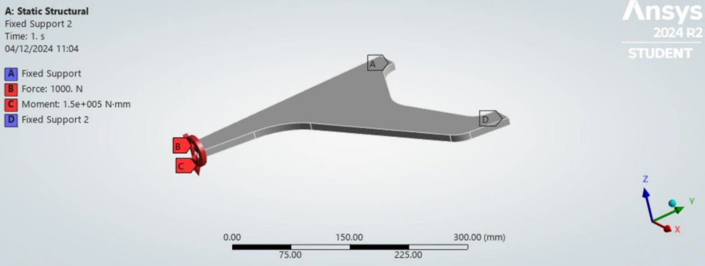
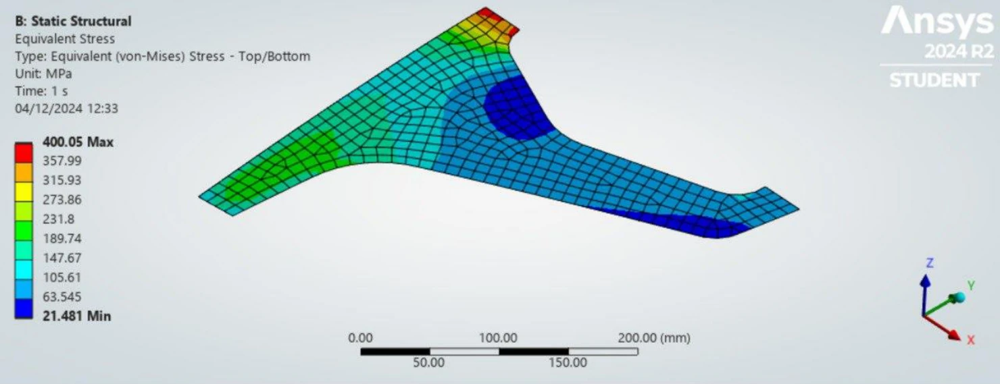

Academic team project
Design and Structural Analysis of Automotive Suspension Component
Comparing steel and carbon/epoxy finite element models of an automotive suspension lower control arm.
- Software
- ANSYS Workbench
- Period
- September 2024 to January 2025
Introduction
The team compared two ways of modelling a steel suspension lower control arm, then examined how a carbon/epoxy laminate would affect mass, deflection, rotation and packaging under the same static loading.
Method
Steel baseline
In ANSYS Workbench, the group compared a three-dimensional solid mesh with a shell mesh. Both used a 1,000 N force and a 150,000 N·mm moment.
Composite assessment
We examined ply stresses and used the Tsai–Hill criterion to screen whether individual layers met the assumed strength limits.
My contribution
I worked directly in the software with peer support, wrote report sections comparing the material options and interpreted the results with my teammates.


Results
Predicted vertical deflection was 6.13 mm for the steel solid model and 6.08 mm for the steel shell model. Peak von Mises equivalent stresses were 423.63 and 400.05 megapascals (MPa), respectively. These differences reflect the two model formulations under the specified loading.
Some plies in the initial 10 mm carbon/epoxy laminate exceeded the Tsai–Hill failure threshold. The composite case indicated scope for lower mass at the expense of a greater laminate thickness, which could affect component fit. The simulations covered the specified static load.


